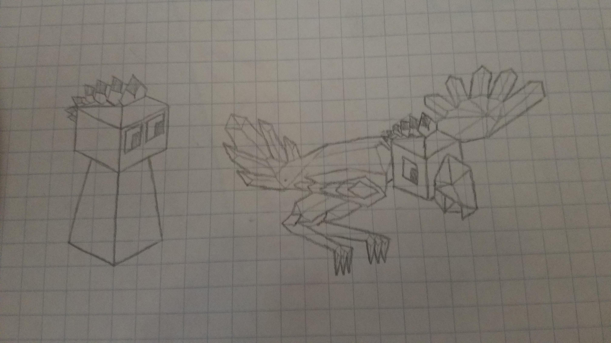

The Gwèni (Gwae-nee)
The Gwèni start their journey in the mountainous regions of Gwèniva, taming the legendary Qwìno birds for flight and war.
The Gwèni start the game with the ‘Bird taming’ tech and a bird rider.
Units
The Qwìno birds are similar to dragons but have 15 hp.
Bird shamans can use convert which can convert any huntable animal into a bird, which is the same as bird rider except it can move more spaces and has 20 health. It costs 10 stars to convert an animal.
Visual Design
Terrain
- Fruit: Squash
- Forest: Rainforests
- Mountains: Andes
- Animal: Qwìno (like ostriches)
Other
- Hat: bird feather
- Color scheme: orange and purple with red ground
Tech
Bird Magic replaces philosophy - can train bird shamans
Images

Warrior and Qwìno